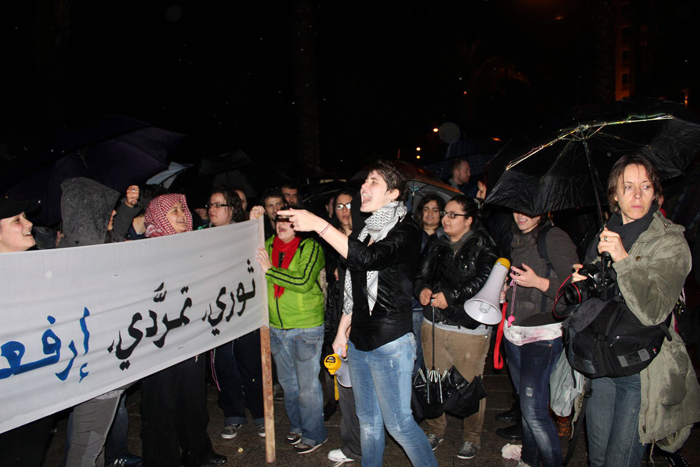

پذيرش > تریبون > مقالات > نوشته ای انتقادی از یک فمینیست لبنانی: حقوق زنان به چه درد می خورد؟!


 نوشته ای انتقادی از یک فمینیست لبنانی: حقوق زنان به چه درد می خورد؟! نوشته ای انتقادی از یک فمینیست لبنانی: حقوق زنان به چه درد می خورد؟!
7 تیر 1390 - - نسخه قابل چاپ
عکس: تظاهرات شبانه ی فمینیست های بیروت در روز جهانی زن
سارا حجازی / ترجمه ی پریسا اسودی
تغییر برای برابری - نشریه فمینستی صدای زنان لبنان، به نقل از آوای زن - تقریبا هر وقت که با یک مرد لبنانی درمورد حقوق زنان گپ بزنید، حرفش اینست: «حقوق زنان در لبنان؟ این روزها مردها هستند که باید حقوق خود را خواستار شوند.» برداشت من این بود که غالب زنها چنین نحوۀ نگرشی را توهین آمیز تلقی کنند. این بود که دو روز پیش راه افتادم رفتم دانشگاه آمریکائی بیروت که ببینم دختران دانشجو دربارۀ حقوق خودشان (به عنوان زن) چی فکر می کنند.
ما مردم لبنان، ظاهرن خیلی لیبرال و روشنفکر هستیم. می گویند که لبنان سوئیس خاورمیانه است. کشور ما کشور آزادیست که در آن با همگان به طور مساوی و با احترام رفتار می شود. البته نمی دانم ما در مورد اینکه هر هفته یک کارگر مهاجر در لبنان می میرد چه داریم بگوئیم؟ «البته متاسفانه این کارگرانی که می میزند، خوب، لبنانی که نیستند!» ادعاهای بیشتر از این هم شنیده ام. گفته می شود که زنان لبنانی از همه ی حقوقی که به آن احتیاج دارند برخوردارند. پس آن قانونی که مانع می شود زنان لبنایی بتوانند تابعیت خود را به شوهر و فرزندانشان بدهند چی؟ البته خوب ما (زنان لبنانی) احتیاجی به لغو این قانون نداریم چونکه اصلا کی می خواهد زن آدم غیرلبنانی بشود!

درواقع، در لبنان زنها خیلی هم با مردها برابر نیستند. برای نمونه در کلاسهای رشتۀ مهندسی، دختران دانشجو غالبن نادیده گرفته می شوند. رانیا فغالی، دانشجوی نوزده سالۀ رشته مهندسی رایانه در دانشگاه آمریکائی بیروت می گوید: «وقتی همکلاسی هام به من نگاه میکنن می بینم که با نگاهشون میپرسن: این اینجا چکار میکنه، مگر قرار نیس که این دختره توی کلاس بیولوژی یا تغذیه باشه» و سمیرای بیست و یک ساله اضافه می کند: «هر موقع استاد سوال می کنه، انتظار نداره ما دخترا جواب بدیم».
خیلی جدی می گویند که درکشور ما اصلن حد و مرزی برای توانایی های زنان وجود ندارد، البته به غیر از اینکه زنها رانندگی بلد نیستند، و واضح و مبرهن است که زنها نباید شبها تنها درخیابان راه بروند. مگر تعجبی هم دارد که امینه فقیه دانشجوی بیست ساله از همه قضاوت ها و محدودیت هائی که زنها بطور روزمره تحمل می کنند خسته است و می گوید: «وقتی به دوستام گفتم میخوام موتورسیکلت بخرم بهم خندیدن و گفتن زنها قبل از اینکه حتی به خریدن موتور سیکلت فکر کنن باید اول یاد بگیرن چطوری اتوموبیل رانندگی کنن» و بعد دلزده ادامه می دهد که «از دست همه این مردا که هی میخوان اتوموبیل منو برام پارک کنن خسته هستم»
بیشتر از همه وقتی خیلی کفری شدم که شنیدم زنها نباید از اینکه هر روز در خیابان به آنها متلک گفته می شود شکایتی داشته باشند. می گویند که این متلک ها یک مدل جدید لاس زنی و خوش و بش است و زنها باید خیلی هم خوششان بیاید. فاطمۀ بیست و یک ساله دانشجوی شیمی ادعا می کند که «زنا [از شنیدن متلک] لذت میبرن. یعنی اعتماد به نفس شون زیاد میشه.» و بعد اضافه می کند که «اصلن متلک انداختن توی خون مرداس، خوب نمیتونن کنترلش کنن.» و ظاهرن، بر اساس مطالب یادگرفته شده در کلاس شیمی و بیولوژی (البته این حدس من است)، نتیجه گیری می کند که «تازه ضرری هم به کسی نمیزنه که.» فکر کنم زینا حیدر که به خاطر متلک و توهین هرروزه درسش را در دانشگاه ناتمام گذاشته باید شدیدن با فاطمه موافق باشد!
اوائل من خیالم راحت بود که فرصت های کاری ای که به زنان داده نمی شود همانی است که از مردان هم دریغ می شود. تا اینکه، روان حکواتی که او هم دانشجوی شیمی است تمام دلایل حق کشی زنان را برایم توضیح داد: « دلیلش اینه که زنا از نظر فیزیکی و بیولوژیکی با مردا فرق دارن. در نتیجه زنا نباید دنبال اون کارائی که مردا میرن برن. من خودم شخصا نمی تونم به یه دکتر زن اعتماد کنم و دوست ندارم زنا جزو ارتش باشن». بعد روان سربرمی گرداند و به دوستش که دانشجوی پزشکی است نگاه می کند و می گوید: «تو نگرانش نباش. میتونی مثلا با بچه ها یا نمیدونم یه چیز دیگه کار کنی». هم من و هم دوست روان یکدفعه حالمان خیلی بهتر می شود!
بارها و بارها می شنویم که در کشور ما با زنان با احترام و تحسین رفتار می شود و در راه آنها برای دست یابی به آرزوهایشان ابدن مانعی وجود ندارد! بله! البته، اگر آرزوهایشان شامل ازدواج کردن و بچه دار شدن و نگهداری از شوهر و بچه هایشان باشد!
دست آخر هم، یارا کفوری دانشجوی زبان شناسی انگلیسی که حرف دلش را می زند پیدا کردم: «ما در یک جامعۀ پدرسالار زندگی میکنیم که همه چیزش به وسیلۀ مردها کنترل میشه. زنا اگه بخوان طلاق بگیرن حق حضانت بچه ها شون بهشون داده نمیشه. قتل ناموسی، باوجودی که باید کاملا ممنوع بشه، هنوزم که هنوزه قانونیه. ما باید اینجا تغییرات واقعی به وجود بیاریم. ما ادعا میکنیم که جامعه تحصیل کرده ای داریم و همه کلی بلدن ولی عجب نحوۀ زندگی عقب مانده ای داریم.»
یارا راست می گوید. ما جامعه تحصیل کرده ای هستیم: ولی از بیست زنی که که من با آنها مصاحبه کردم هیجده تایشان راجع به قانون تابعیت چیزی نشنیده بودند و نمی دانستند که متلک گفتن نوعی آزار جنسی است!
البته بله وقتی به مد لباس، یا آخرین مدل جراحی پلاستیک، یا اینکه شبها کجا باید رفت و چه مدل اتوموبیلی راند، برسد ما خیلی تحصیل کرده ایم. ولی اطلاع داشتن از حقوق خودمان، از قوانین و دانستن تفاوت بین واقعیت ها و نگرش های یک بعدی به نظر ما حیاتی به نظر نمی رسد.
به بیان دیگر، وقتی نوبت به مسائل مهم مثل لباس و جشن می رسد زنان لبنانی شهروندانی برابر هستند. نباید بگذاریم چیزهای کوچک مثل قدرت سیاسی کمتر، حقوق و درآمد کمتر مارا آزار بدهد! خیلی از مردهای لبنانی راجع به این مسائل ککشان هم نمی گزد. مال ما چرا بگزد؟ درست می گویم دیگه، نه؟!
به نقل از نشریه ی فمینیستی صدای زنان لبنان
منتشر شده در نشریه آوای زن شماره ی 71 تابستان 2011www.avayezan.org
ارسال به
بالاترین
،
توییتر
،
فریندفید
،
فیسبوک
در همين بخش :
 دهمین دورۀ مراسم تندیس صدیقه دولت آبادی ۱۳۹۲ دهمین دورۀ مراسم تندیس صدیقه دولت آبادی ۱۳۹۲
کارت پستالهایی به بهانهی هشت مارس و به یاد همهی مبارزین راه برابری
بیانیه بیش از 350 تن از مدافعان حقوق زنان به مناسبت روز جهانی زن؛ زنان هر روز فرودستتر میشوند
لباسی که برای تن ما دوخته اند! /اعظم بهرامی
چالشها و چشمانداز فعالیت مدنی زنان
ديگر بخش ها :
طرح یک میلیون امضا
|
مقالات
|
سایت نوشته ها
|
اخبار
|
گزارش كمپين
|
گفت و گو
|
علیه سکوت
|
كوچه به كوچه
|
نامه های شما
|
گزارش ویژه
|
گفتگو با اعضا
|
ویژه سالگرد کمپین
|
تصویر برابری
|
دل آرام علی
|
تریبون
|
مقالات
|
تاریخ شفاهی
|
خارج از چارچوب
|
کتابخانه
|
درباره کمپین
|
کمپین در شهرها
|
کمپین در بند
|
صدای تغییر
|
ویژه 22 خرداد
|
لایحه حمایت از خانواده
|
گالری
|
عشا مومنی
|
امیر یعقوبعلی
|
خدیجه مقدم
|
راحله عسگری زاده و نسیم خسروی
|
پروین اردلان،جلوه جواهری، مریم حسین خواه، ناهید کشاورز
|
زینب پیغمبرزاده
|
سعیده امین، سارا ایمانیان، محبوبه حسین زاده، ناهید کشاورز و همایون نامی
|
احترام شادفر
|
نسیم سرابندی زاده،فاطمه دهدشتی
|
وبلاگ مهمان
|
پرونده خرم آباد
|
دستگیری ها
|
مریم مالک
|
پرستو اللهیاری
|
مهرنوش اعتمادی
|
سمیه رشیدی
|
Other Languages
|
همراهان
|
«فراخوان کمپین ده روز با بهاره هدایت»
| English
|